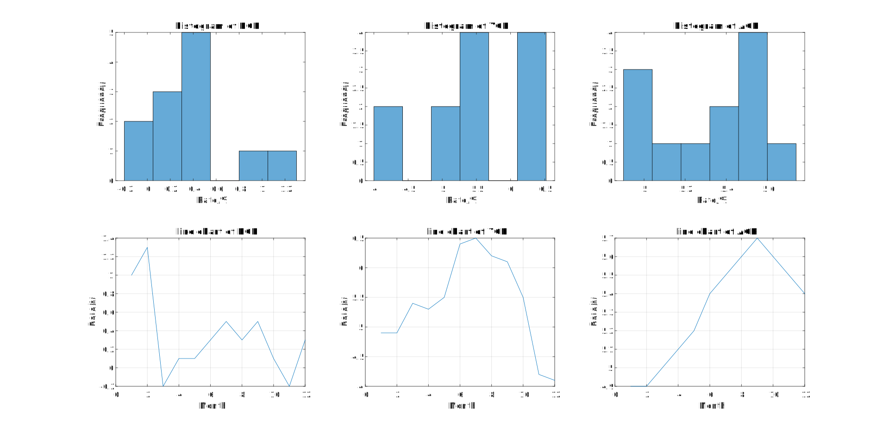
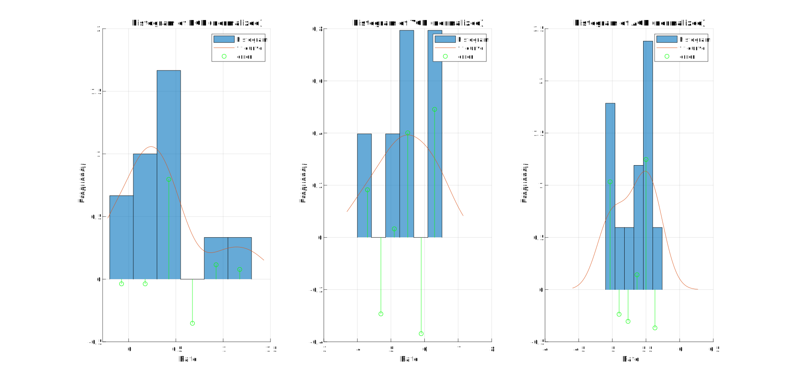

histogram 和 fitdist 用法一例
题目
以 2011 年中国 CPI 的三个增长率 (环比增长率, 同比增长率, 累计增长率) 为例
- 根据数据做出三个增长率的直方图与折线图
- 用某一分布拟合归一化后的直方图并给出误差
数据如下
1 | % Round-ratio growth rate |
主要命令用法简介
histogram
用途
画直方图
本例中涉及的用法
histogram(data): 对给定数据画直方图histogram(data, nbins): 指定bin数目, 对给定数据画直方图histogram(data, [], name, value): 更改指定属性Normalization: 归一化属性, 默认为countcount: 即不做处理pdf: 概率密度函数的估计值, 使用此属性能使直方图总面积 ( 当且仅当数据中出现NaN等)
h = histogram(data):h为直方图对象, 用于获取和修改直方图数据h.Values: 即每个bin对应的值
fitdist
用途
对给定数据和概率分布类型进行拟合
本例中涉及的用法
pd = fitdist(x, distname): 对给定数据和概率分布类型进行拟合
实际上本题可以使用
histfit命令同时绘制直方图和拟合曲线, 但因为笔者在调取其返回的句柄时出现了问题, 故未使用
代码与结果
问题1
Show code 1
1 | % Plot histogram and line chart with given data |

问题2
Show code 2
1 | % Normalize and fit probability distribution object on given data, then plot histogram, fit curve and error |

主要参考资料
- 姜启源, 谢金星, 叶俊. 数学模型（第五版）. 高等教育出版社, 2018, 39-40
- 直方图 - MATLAB - MathWorks 中国
- 具有分布拟合的直方图 - MATLAB histfit - MathWorks 中国
- 对数据进行概率分布对象拟合 - MATLAB fitdist - MathWorks 中国
- 曲线拟合和分布拟合 - MATLAB & Simulink Example - MathWorks 中国